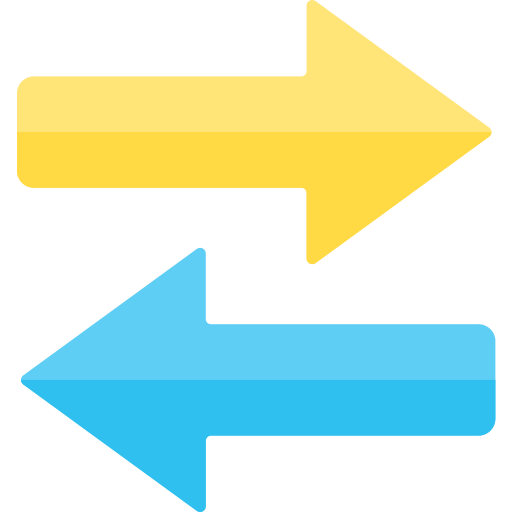
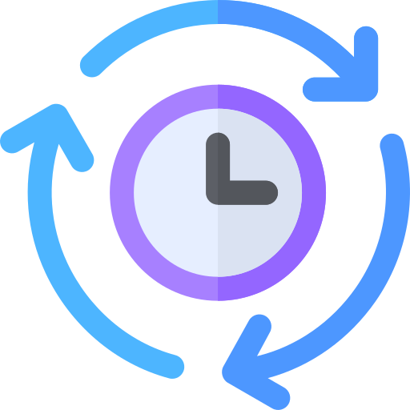
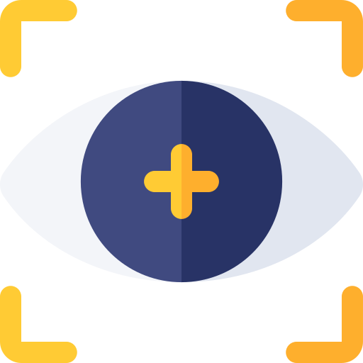
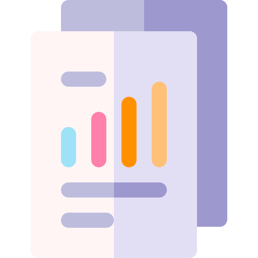

물류의 모든 흐름,
카메라 하나로 완성됩니다.
수기로 세던 재고, 놓치기 쉬운 입출고 수량이 AI 카메라로 실시간 가시화됩니다.
복잡했던 입고·출고·선입선출이 누구나 바로 실행할 수 있는 단순한 흐름으로 바뀝니다.
현장의 문제
보이지 않던 물류,
이런 어려움 겪고 계시죠?
사람이 수기로 세던 재고
엑셀·장부·수기 전표로는 실시간 수량이 보이지 않아, 재고 차이가 뒤늦게 드러납니다.
이중으로 입력하는 복잡한 과정
현장에서 한 번, 기간계에 또 한 번. 같은 데이터를 두 번 치는 복잡함이 반복됩니다.

숨어있던 선입선출 문제
먼저 들어온 재고는 바닥에 깔려 보이지 않고, 나중에 온 것이 먼저 나가며 클레임과 폐기 비용이 쌓입니다.
어디 있는지 보이지 않는 재고
창고에 있다는 건 알지만, 정확한 위치는 사람이 직접 돌아다녀야 겨우 파악됩니다.
기간계 연동
복잡했던 시스템 연동,
바꾸지 않고
그대로 연결합니다.
카메라가 인식한 입출고 데이터가 자동으로 생성되어,
지금 쓰시는 기간계에 실시간으로 반영됩니다.
현장에서 따로 입력할 일이 없어 업무가 한결 쉬워집니다.
스마트 재고 가시성
보이지 않던 재고까지,
한눈에 드러납니다.
창고 사각지대에 숨어있던 재고를 AI가 자동으로 감지하고,
장기 체류 재고는 실시간으로 알림이 옵니다.
선입선출이든 커스텀이든, 출고 방식을 누구나 쉽게 선택할 수 있습니다.
재고 관리 흐름
사각지대 포함 모든 위치의 재고 자동 감지
장기 체류 · 미관리 재고 발견 시 실시간 알림
FIFO, 유통기한 우선, 커스텀 등 원하는 기준으로 출고
스마트 스캔
입고·출고 인식,
사람 없이 자동으로.
어려웠던 수량 집계가 OCR 인식으로 실시간 가시화됩니다.
코일·박스·파렛트 등 다양한 재고를 카메라가 자동 스캔하고,
촬영 이미지와 함께 데이터베이스에 단순하게 저장합니다.
스캔된 데이터는 곧바로 기존 시스템에 반영됩니다.
어떤 현장이든
창고의 종류는 달라도,
한 화면에 담깁니다.
카메라는 품목을 가리지 않습니다.
AI 비전이 형태와 패턴을 스스로 학습해, 현장에 맞게 설정하면
어떤 품목이든 누구나 쉽게 자동 인식을 시작할 수 있습니다.
이동 물체 실시간 추적
크레인·지게차·작업자의 동선,
실시간으로 드러납니다.
보이지 않던 이동 경로를 카메라가 한눈에 펼쳐 보여줍니다.
위험 구역 접근 감지, 구역 이탈 경보, 충돌 위험 사전 알림까지 안전 관리가 쉬워집니다.
3D 자동 맵핑 & 시스템 연동
복잡했던 현장이 3D로 펼쳐지고,
위치가 자동으로 찍힙니다.
추적된 이동 물체와 재고 데이터가 3차원 공간에 그대로 가시화됩니다.
어디에 무엇이 있는지 입체 맵 위에서 한눈에 확인하고,
그 정보는 기존 시스템으로 자동 전송됩니다.
사람이 개입하지 않아도 현장이 명쾌하게 돌아갑니다.
Real-time Dashboard
현장 데이터를
언제 어디서든 한눈에.
수집된 모든 데이터가 실시간으로 가시화됩니다.
PC·모바일·태블릿·웹 어디서든 재고 현황, 이동 물체 위치,
입출고 이력을 누구나 쉽게 조회하고 관리할 수 있습니다.

품목별·구역별 재고 현황을 실시간으로 확인

크레인·지게차·작업자 위치를 화면에서 직접 모니터링

날짜·품목별 입출고 이력을 언제든 조회·다운로드
현장 맞춤 컨설팅
현장마다 다른 답,
저희가 명쾌하게 찾아드립니다.
모든 현장은 환경과 조건이 다릅니다. AI 비전 외에도 UWB 실내 위치 측위, 지게차 위치 관리,
IoT 연동까지 — 복잡한 기술을 현장에 맞게 조합해 단순한 해답으로 드립니다.
현장 구조, 장비, 운영 방식을 직접 확인하고 문제점을 파악합니다.
현장에 맞는 기술을 선별하여 솔루션을 설계합니다.
실제 환경에 시범 적용하여 효과를 측정하고 안정성을 검증합니다.
전체 시스템을 구축하고 안정적인 운영을 위한 지속적인 지원을 제공합니다.
지금 경험해보세요
보이지 않던 물류, 어려웠던 현장.
지금 바로 확인해보세요.
전문 컨설턴트가 현장을 직접 분석해, 기존 시스템 연동부터
선입선출 운영 설계까지 누구나 쉽게 쓰는 맞춤 솔루션을 제안합니다.